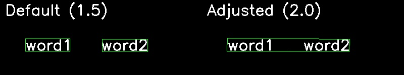
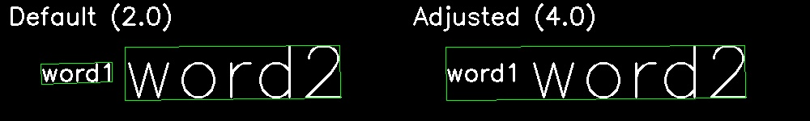
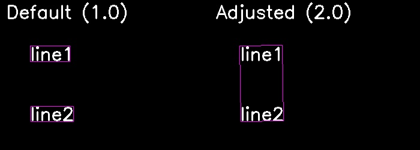
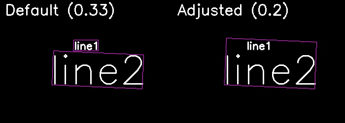

Overview
The TextOCR class uses Optical Character Recognition (OCR) to detect and recognize text within images. It offers methods for identifying text, words, and paragraphs in various image formats, with customizable output options, such as grouping detected words into "lines" or "paragraphs."
Text OCR operates through a two-stage process:
- Detection Stage - Processes the input image to produce bounding boxes, or text boxes, which are rotated rectangles not necessarily perpendicular to the image’s edges.
- Recognition Stage - Analyzes each text box to generate a list of possible text decodes.
Although these stages are streamlined for the end user, developers can fine-tune them using parameters outlined in this guide.
The initial instructions in this guide provide the basic setup of TextOCR. A comprehensive list of OCR settings, along with their effects on detection and recognition, is provided in the subsequent sections. For atypical use cases, developers are encouraged to experiment with and adjust these parameters.
UPDATE NEEDED
Capabilities
Supported Characters
TextOCR recognizes a range of characters, including:
*0123456789abcdefghijklmnopqrstuvwxyzABCDEFGHIJKLMNOPQRSTUVWXYZ!\"#$%&'()*+,-./:;<=>?@[\\]^_`{|}~*
By default, it supports a maximum word length of approximately 15 characters, though this limit may decrease with the use of uncommon fonts. Enabling tiling removes this restriction.
Input/Output
Input Parameters: The default model input size is 640x640 pixels, but this can be adjusted during runtime initialization. Output Parameters: The output consists of a list of text detections, each accompanied by a list of bounding boxes that define the location and content of the detected text.
Developer Guide
Step 1: Initialization
Set up and initialize a TextOCR object:
Import the TextOCR class using
com.zebra.ai.vision.TextOCR.Configure OCR Settings:
- Set
model_file_pathwith the fully qualified file path to the .crypt file containing the OCR model.
- Set
- Create a
TextOCR.Settingsobject with the specified file path. Optional: Set model input dimensions: If needed, customize the model input dimensions (height and width). These should be multiples of 32 (e.g., 640).
settings.detectionInferencerOptions.defaultDims.width = [your value]; settings.detectionInferencerOptions.defaultDims.height = [your value];- Smaller Input Sizes - Reduce processing time and increase speed, but may decrease accuracy. Ideal for larger or closer text.
- Larger Input Sizes - Improve accuracy for smaller or more distant text, but increase inference time. An input size that is too large may cause out-of-memory errors and potentially cause an application crash at run-time.
Initialize the OCR object - Declare a
TextOCRobject. UseCompletableFutureto initialize it asynchronously with anExecutorfor concurrent processing.Callback Handling - Use
thenAccept()to assign the initializedTextOCRobject to thetextocrvariable, enabling it for text detection tasks like barcodes and products in images.
For more advanced inferencer options, refer to Inferencer Options.
Sample Code
import com.zebra.ai.vision.TextOCR;
TextOCR.Settings settings = new TextOCR.Settings(model_file_path);
// Optional: Override the default model input size
settings.detectionInferencerOptions.defaultDims.width = 640;
settings.detectionInferencerOptions.defaultDims.height = 480;
// Initialize OCR object
TextOCR textocr = null;
// Initialize textocr
// settings = TextOCR.Settings object created above
// Executor = An executor thread for processing API calls and returning results
CompletableFuture<TextOCR> futureObject = getTextOCR(settings, executor);
// Use the futureObject to implement the thenAccept() callback of CompletableFuture
futureObject.thenAccept (OCRInstance -> {
// Use the Textocr object returned here for detecting barcodes/Shelves/products
textocr = OCRInstance;
});
Step 2: Capture Image
Capture the image and ensure the image is in the form of a Bitmap.
Step 3: Detect Text
Use one of the following methods to detect text within an image, based on generic text, words or paragraphs:
UPDATE NEEDED
- DetectWords – Outputs an array of words. A word is a discrete unit of text identified within an image, typically separated by spaces or punctuation.
- DetectParagraphs - Outputs a hierarchical structure of paragraphs. It employs a grouping mechanism as outlined in the Grouper Settings. A paragraph consists of a collection of words, where words on the same line are grouped together. These lines are further organized into paragraphs. The entire process is parameterized, with relevant parameters detailed in the Grouper Settings.
UPDATE NEEDED - LINK
Sample Code
To detect generic text:
Bitmap image = ... // Your bitmap image here
// Initialize executor
Executor executor = Executors.newFixedThreadPool(1);
// Input parameters include a bitmap image and an executor thread object for performing detections
CompletableFuture<OCRResult[]> futureResult = textocr.detect(bitmap,executor);
futureResult.thenAccept (ocrResults -> {
// Process the returned output that contains bounding boxes and text within
});
// Once finished with the textOCR object, dispose of it to release resources and memory used during detection.
textOCR.dispose();
To detect words:
Bitmap image = ... // Your bitmap image here
// Initialize executor
Executor executor = Executors.newFixedThreadPool(1);
// Input parameters include a bitmap image and an executor thread object for performing detections
CompletableFuture<Word[]> futureWords = textocr.detectWords(bitmap,executor);
futureWords.thenAccept (words -> {
// Process the returned array of detected words
});
// Once finished with the textOCR object, dispose of it to release resources and memory used during detection
textOCR.dispose();
To detect paragraphs:
Bitmap image = ... // Your bitmap image here
// Initialize executor
Executor executor = Executors.newFixedThreadPool(1);
// Input parameters include a bitmap image and an executor thread object for performing detection
CompletableFuture<TextParagraph[]> futureTextParagraph = textOCR.detectParagraphs(bitmap,executor);
futureTextParagraph.thenAccept (paragraphs -> {
// Process the returned array of detected paragraphs.
});
// Once finished with the textOCR object, dispose of it to release resources and memory used during detection
textOCR.dispose();
APIs
TextOCR (Settings settings)
TextOCR.TextOCR(Settings settings) throws IOException
Description: Initializes the OCR engine with the specified settings, allowing subsequent text detection and analysis on image inputs. It checks for the necessary model file and verifies the integrity of the archive. If issues are detected, appropriate exceptions are thrown.
Parameters:
- settings TextOCR.Settings - An instance of the
Settingsclass containing configuration options for the OCR engine, such as model path, language preferences, and performance settings.
Return Value: CompletableFuture<TextOCR>
Exceptions:
- IOException - Thrown if the archive is corrupted.
detect (Bitmap srcImg, Executor executor)
CompletableFuture<OCRResult[]> detect (Bitmap srcImg, Executor executor) throws InvalidInputException, IllegalStateException
Description: Performs Optical Character Recognition (OCR) on the provided Bitmap image, using the specified executor for asynchronous execution.
Parameters:
- srcImg (Bitmap srcImg) - The Bitmap image to perform OCR on.
- executor - Manages asynchronous task execution.
Return Value: A CompletableFuture that resolves to an array of OCRResult, each containing bounding boxes and recognized text.
Exceptions:
- InvalidInputException - Thrown if the Bitmap is null.
- IllegalStateException - Thrown if the OCR engine is in an invalid state for detection.
detectWords (Bitmap srcImg, Executor executor)
CompletableFuture<Word[]> TextOCR.detectWords (Bitmap srcImg, Executor executor) throws InvalidInputException, IllegalStateException
Description: Detects individual words in the provided Bitmap image using the specified executor for asynchronous execution.
Parameters:
- srcImg (Bitmap srcImg) - The image to analyze for word detection.
- Executor - Manages asynchronous task execution.
Return Value: A CompletableFuture that resolves to an array of Word objects, each containing bounding boxes and possible text decodes.
Exceptions:
- InvalidInputException - Thrown if the Bitmap is null.
- IllegalStateException - Thrown if the OCR engine is in an invalid state for performing word detection.
detectParagraphs (Bitmap srcImg, Executor executor)
CompletableFuture<TextParagraph[]> detectParagraphs(Bitmap srcImg, Executor executor)
Description: Detects paragraphs in the provided Bitmap image using the specified executor for asynchronous execution.
Parameters:
- srcImg (Bitmap srcImg) - The image to analyze for paragraph detection.
- executor - Manages asynchronous task execution.
Return Value: A CompletableFuture that resolves to an array of TextParagraph objects, representing detected paragraphs.
Exceptions:
- InvalidInputException - Thrown if the Bitmap is null.
- IllegalStateException - Thrown if the OCR engine is in an invalid state for performing paragraph detection.
getTextOCR (Settings settings, Executor executor)
CompletableFuture<TextOCR> getTextOCR(Settings settings, Executor executor)
Description: Asynchronously initializes and retrieves a TextOCR instance using the specified settings and executor.
Parameters:
- Settings - An instance of
TextOCR.Settingscontaining configuration options for the OCR engine. - executor - Manages asynchronous task execution.
Return Value: A CompletableFuture that resolves to an initialized TextOCR instance.
Exceptions:
- InvalidInputException - Thrown if the settings are invalid or null.
- RuntimeException - Thrown if an unexpected error occurs during initialization.
Dispose()
void dispose()
Description: Releases all internal resources used by the TextOCR object. This function must be called manually to free up resources.
TextOCR.Settings
The Settings class is a nested class within the TextOCR class, designed to configure various parameters required for performing Optical Character Recognition (OCR). It allows for fine-tuning of the OCR process through settings related to detection, recognition, and decoding.
Constructors
Settings()
TextOCR.Settings settings = new TextOCR.Settings();
Description: Constructs a new Settings object with default values for all parameters.
Settings(String resource_filename)
TextOCR.Settings settings = new TextOCR.Settings(String resource_filename);
Description: Constructs a new Settings object with a specified resource file path.
Parameters:
- resource_filename - The path to the resource file containing the OCR model.
Settings(String resource_filename, String detector_model_name, String recognition_model_name)
TextOCR.Settings settings = new TextOCR.Settings(String resource_filename, String detector_model_name, String recognition_model_name);
Description: Constructs a new Settings object with a specified resource file, detector model name, and recognition model name.
Parameters:
- resource_filename - Path to the resource file containing the OCR model.
- detector_model_name - Name of the detector model in the archive file.
- recognition_model_name - Name of the recognition model in the archive file.
Recognition Parameter Settings
decodingMaxWordCombinations
int TextOCR.Settings.decodingMaxWordCombinations
Description: Specifies the maximum number of possible text decodes returned in the output. This parameter helps balance the quantity and confidence of text outputs. It is applicable for the following scenarios:
- Detailed Text Analysis - Increase this parameter for applications that require a thorough analysis of text.
- Data Extraction - Adjust this parameter to optimize the extraction of comprehensive data from documents with complex or ambiguous text.
Tuning effect: Increasing this number returns more decodes, but potentially with lower confidence.
Default: 10
Valid range: [1, max(int)]
decodingTotalProbThreshold
float TextOCR.Settings.decodingTotalProbThreshold
Description: Sets the minimum cumulative confidence score required for character decodes to be considered valid. This is crucial in the Total decoding strategy of the OCR recognition process, balancing accuracy and coverage in text recognition. If this threshold is not reached, no high-confidence decode exists, and a placeholder (�) appears in the output.
UPDATE NEEDED - char
This parameter is relevant in the following scenarios:- Improving Decode Coverage - Lower the threshold in scenarios where critical text characters are missing to capture more potential decodes.
- Complex Document Analysis - Apply this setting in documents with ambiguous or low-quality text to ensure more comprehensive character recognition.
- Adaptive Recognition - Adjust dynamically based on the quality and complexity of input documents to optimize OCR performance for specific needs.
Tuning effect: Lowering this value may help if many characters are not decoded (indicated by multiple � characters), .
UPDATE NEEDED - char
Default: 0.9f
Valid range: [0.0f, 1.0f]
decodingTopkIgnoreCutoff
int TextOCR.Settings.decodingTopkIgnoreCutoff
Description: Sets the maximum number of decodes considered for each character before calculating the cumulative probability, impacting the accuracy and completeness of text recognition. It is used specifically within the Total decoding strategy of the OCR recognition process. This parameter is applicable for the following scenarios:
- Complex Text Recognition - Increase this parameter for documents with complex or ambiguous text where capturing all character variations is crucial.
- Improving Character Accuracy - Use this setting in scenarios where critical text components are consistently missing, ensuring thorough character analysis.
- Adaptive Text Processing - Adjust dynamically based on the complexity and quality of input text to optimize OCR performance.
Tuning effect: Generally, keep this at the default value. If the expected character does not appear in the OCR output, increasing this value allows for more less confident decodes.
Default: 4
Valid range: [1, max(int)]
Sample Code
Sample code demonstrating use of Recognition Parameters:
Initialize Settings: Configure the OCR settings, including the model path and additional parameters such as
heatmapThresholdandtiling.Create TextOCR Instance: Use an executor to initialize the
TextOCRinstance asynchronously with the configured settings.Load Bitmap Image: Prepare the bitmap image that you want to analyze using OCR.
Perform OCR: Invoke the
detectmethod on theTextOCRinstance to analyze the bitmap image, managing the asynchronous processing with the executor.Process OCR Results: Handle the results, which include bounding boxes and recognized text.
Dispose Resources: After completing OCR operations, call the
disposemethod on theTextOCRinstance to release resources and prevent memory leaks.import com.zebra.ai.vision.TextOCR; import com.zebra.ai.vision.TextOCR.Settings; import android.graphics.Bitmap; // Initialize settings TextOCR.Settings textOCRSettings = new TextOCR.Settings ("path_to_model/text_ocr_snpe_tar.crypt"); textOCRSettings.heatmapThreshold = 0.5f; textOCRSettings.decodingTotalProbThreshold = 0.9f; textOCRSettings.tiling.enable = true; // Instantiate TextOCR with the configured settings // settings = TextOCR.Settings object created above // Executor = An executor thread for processing API calls and returning results // Initialize executor Executor executor = Executors.newFixedThreadPool(1); CompletableFuture<TextOCR> futureObject = getTextOCR(textOCRSettings, executor); // Use the futureObject to implement thenAccept() callback of CompletableFuture. futureObject.thenAccept (OCRInstance -> { // Use the textocr object returned here detecting barcodes, shelves, or products textocr = OCRInstance; }); // Load your Bitmap image Bitmap image = ...; // Perform OCR CompletableFuture<OCRResult[]> futureResult = textocr.detect(bitmap,executor); futureResult.thenAccept (ocrResults -> { // Process the returned output that contains bounding boxes and recognized text }); // Dispose resources // Once done using the textOCR object, dispose it to release resources and memory used for detection. textOCR.dispose()
Detection Parameter Settings
detectionModelName
TextOCR.Settings.detectionModelName
Description: Name of the detector model within the OCR resource archive.
flip
boolean TextOCR.Settings.flip
Description: If set to true, performs recognition twice - once in the regular orientation and once rotated by 180 degrees.
recognitionModelName
TextOCR.Settings.recognitionModelName
Description: Name of the recognition model within the OCR resource archive.
resourceName
TextOCR.Settings.resourceName
Description: File path to the OCR resources, including models.
detectionInferencerOptions
InferencerOptions TextOCR.Settings.detectionInferencerOptions = new InferencerOptions()
Description: Allows developers to specify a different input shape for the detection stage inferencer.
recognitionInferencerOptions
InferencerOptions TextOCR.Settings.recognitionInferencerOptions = new InferencerOptions()
Description: Typically remains unchanged as the input size is fixed for the recognition model. Developers can adjust recognition results using parameters in the Recognition Options section. TensorRT users might use the caching mechanism available here. Note: These options should not be changed by the developer.
UPDATE NEEDED: Recognition Options? TensorRT?
heatmapThreshold
float TextOCR.Settings.heatmapThreshold
Description: Internally, the detector model creates a grayscale image (heatmap) that represents text confidence. This parameter sets a cutoff to identify potential areas likely to contain text, converting them into text boxes.
Tuning effect:
- Increase Threshold - Reduces areas identified as text, useful for high-contrast images like scanned documents.
- Decrease Threshold - Expands areas identified as text, useful for low-contrast or barely visible text.
Default: 0.5f
Valid range: [0.0f, 1.0f]
minBoxArea
int TextOCR.Settings.minBoxArea
Description: Filters out small, unimportant boxes from the OCR output.
Tuning effect: Increasing this parameter filters out boxes with small areas.
Default: 10 Valid range: [0, max(int)]
boxThreshold
float TextOCR.Settings.boxThreshold
Description: Sets the minimum confidence score required for a text box to be included in the OCR output. Boxes with confidence scores below this threshold are excluded, helping to filter out less certain text detections.
Tuning effect:
- Increase Threshold: Excludes less-confident text boxes, useful when too many boxes are detected.
- Decrease Threshold: Includes more text boxes, which might be necessary when important text is being missed.
Default: 0.85f
Valid range: [0, 1.0]
minBoxSize
int TextOCR.Settings.minBoxSize
Description: Filters out very narrow boxes (low height or width) that likely do not contain real text.
Tuning effect: Increasing this parameter filters out very narrow boxes.
Default: 1
Valid range: [0, max(int)]
minRatioForRotation
float TextOCR.Settings.minRatioForRotation
Description: Rotates vertically oriented text boxes to horizontal to improve recognition. Adjust this value for images with significant rotated text. Note: Words are generally wider than they are tall, so their ratio should exceed the default value. Therefore, avoid changing this parameter for words, since word bounding boxes should be horizontally oriented before recognition.
Tuning effect: Setting this parameter to 0 disables rotation. Otherwise, rotate boxes with a height-to-width ratio exceeding this value 90 degrees counterclockwise before recognition.
Default: 1.5f
Valid range: [0.0f, inf]
unclipRatio
float TextOCR.Settings.unclipRatio
Description: Slightly stretches text boxes before recognition to improve results. Tight-fitting boxes might benefit from some extra background for better decoding.
Tuning effect: Increasing this parameter enlarges text boxes, potentially improving recognition. An unclipRatio of 1 keeps boxes unchanged, while 1.5 enlarges them by 50%.
Default: 1.5f
Valid range: [1.0f, inf]
Sample Code
This sample code demonstrates how to adjust detection parameter settings:
Configure Settings: Set up the OCR model and adjust parameters such as
heatmapThresholdandboxThresholdto improve detection accuracy based on your specific needs.Instantiate TextOCR: Create a
TextOCRobject using the settings. This object will handle text detection and recognition tasks.Load Bitmap Image: Prepare the image you want to process by converting it to a Bitmap object.
Detect Text: Call the
detectmethod to analyze the image and retrieve an array ofOCRResultobjects containing the detected text.Print Results: Iterate over the
OCRResultarray to output the recognized text to the console.Dispose Resources: Free up system resources by calling the
disposemethod on theTextOCRobject after usage.import com.zebra.ai.vision.TextOCR; import com.zebra.ai.vision.TextOCR.Settings; import android.graphics.Bitmap; // Initialize settings with a custom heatmap threshold TextOCR.Settings textOCRSettings = new TextOCR.Settings ("path_to_model/text_ocr_snpe_tar.crypt"); settings.heatmapThreshold = 0.3f; // Lower threshold for low-contrast text settings.boxThreshold = 0.9f; // Higher threshold for more confident text boxes settings.minBoxSize = 10; // Set minimum box size to 10 pixels settings.minBoxArea = 50; // Set minimum box area to 50 pixels settings.resizeDetectorToImage = true; // Enable full-resolution processing settings.unclipRatio = 2.0f; // Enlarge text boxes by 100% settings.minRatioForRotation = 2.0f; // Rotate boxes with height-to-width ratio exceeding 2.0 // Initialize executor Executor executor = Executors.newFixedThreadPool(1); CompletableFuture<TextOCR> futureObject = getTextOCR(textOCRSettings, executor); // Use the futureObject to implement thenAccept() callback of CompletableFuture. futureObject.thenAccept (OCRInstance -> { // Use the Textocr object returned here for the detection of barcodes/shelves/products textocr = OCRInstance; }); // Load your Bitmap image Bitmap image = ...; // This is your input image // Perform OCR CompletableFuture<OCRResult[]> futureResult = textocr.detect(bitmap,executor); futureResult.thenAccept (ocrResults -> { // Process the returned output that contains bounding boxes and recognized text }); // Dispose resources // Once done using the textOCR object, dispose of it to release resources and memory used for detection textOCR.dispose();
Description: A structure containing parameters for the word into line and line into paragraph grouping.
Type:
TextOCRGrouper::OptionsFields:
widthDistanceRatio
- Description: Determines whether the distance between the centers of two words along the x-axis is significantly large. Raising this parameter will cause words that are spaced out horizontally to be joined into a line.
- Type:
float - Default:
1.5f - Example: If the average width of words is 90 pixels, setting
widthDistanceRatioto 2.0 will allow words up to 180 pixels apart to be grouped into the same line.

heightDistanceRatio
- Description: Determines whether there is a significant difference in the height of two words. Raising this parameter will cause words of different heights to be joined into a line.
- Type:
float - Default:
2.0f - Example:
heightDistanceRatioto 4.0 will allow words with heights in the range of from approximately 0.25 and 4 times the height to be grouped into the same line.

centerDistanceRatio
- Description: Determines whether the distance between the centers of two boxes along the y-axis is significantly large. Raising this parameter will cause words that are not strictly aligned in a straight line to be joined into a line object.
- Type:
float - Default:
0.6f - Example: If the average height of words is 20 pixels, setting
centerDistanceRatioto 1.0 will allow words with centers up to 20 pixels apart vertically to be grouped into the same line.

paragraphHeightDistance
- Description: Determines the difference in the distance between the centers of two rows along the y-axis. Raising this parameter will cause lines that are spaced out vertically to be joined into a paragraph.
- Type:
float - Default:
1.0f - Example: If the average height of lines is 30 pixels, setting
paragraphHeightDistanceto 2 will allow lines with centers up to 60 pixels apart vertically to be grouped into the same paragraph.

paragraphHeightRatioThreshold
- Description: Determines whether there is a significant difference in the heights of two rows. Lowering this parameter will cause lines with higher difference in heights to be joined into a paragraph.
- Type:
float - Default:
1.0f/3.0f - Example: If the average height of lines is 50 pixels, setting
paragraphHeightRatioThresholdto 0.2 will allow lines with heights ranging from approximately 10 pixels to 250 pixels to be grouped into the same paragraph.

Tiling Options
- Description: A structure containing parameters related to handling very long text boxes.
- Type:
OpenCVOcrTiler::Options - Fields:
- enable
- Description: Enable tiling of elongated text boxes. Boxes that match aspect ratio criteria will be split into multiple images (tiles) and recognition will be performed on each of them. After that, a correlation method will be used to merge the results of recognition into a single set of decodes. Enabling this option may help recognize text in long strings of characters.
- Type:
bool - Default:
false
- topCorrelationThr
- Description: Increasing this value will reduce the number of combinations used internally to perform tiling based on their confidence. Tuning this value may increase/decrease tiling result accuracy. Setting it to 0 will turn this feature off.
- Type:
float - Default:
0.0f - Valid range:
[0.0f, 1.0f]
- mergePointsCutoff
- Description: This is an internal parameter used to limit the number of possible combinations used for tile merging. Raising this value will result in more combinations being used internally and will increase the processing time but can also generate more accurate results.
- Type:
int - Default:
5
- splitMarginFactor
- Description: This parameter scales the confidence values for characters that are at the borders of consecutive tiles, assuming that characters that these characters could be deformed due to cutting the image into tiles. It's not recommended to modify this value.
- Type:
float - Default:
0.1f - Valid range:
[0.0f, 1.0f]
- aspectRatioLowerThr
- Description: Tiling algorithm decides which boxes should be tiled and which not. Lowering this threshold will result with more boxes, with smaller aspect ratio (width/height) being tiled. Lowering this value can result in increased processing time.
- Type:
float - Default:
10.0f
- aspectRatioUpperThr
- Description: This threshold alows filtering of boxes with very high aspect ratio. Such boxes rarely occur naturally and sometimes are a false positive of text detector model. Lowering this value will result in less boxes being tiled.
- Type:
float - Default:
40.0f
- topkMergedPredictions
- Description: The final tiling result - the decodes, are sorted based on their confidence score. This setting allows the user to limit the number of decodes being returned from the OCR.
- Type:
int - Default:
5
- enable
APIs
The TextOCR class is part of the com.zebra.AI.Vision package and is used for detecting and recognizing text in images. It provides methods for detecting text at different granularities, including words and paragraphs. This class is essential for applications that require text extraction from images, such as document scanning, automated data entry, and more.
TextOCR(Settings settings)
Initializes the OCR engine with the specified settings, allowing subsequent text detection and analysis on image inputs. It validates the availability of required model files and ensures the integrity of the archive. If any issues are detected, appropriate exceptions are thrown.
- Constructor:
- TextOCR.TextOCR (Settings settings) throws FileNotFoundException, IOException
- Parameters:
settings- TextOCR.Settings settings to construct an OCR object with. An instance of theSettingsclass, containing configuration options for the OCR engine. These settings include model paths, language preferences, and performance configurations.
- Exceptions:
FileNotFoundException- Thrown if the required model file is not found in the archive.IOException- Thrown if the archive is corrupted.
detect (Bitmap srcImg)
Performs Optical Character Recognition (OCR) on the provided Bitmap image.
- Method:
- CompletableFuture<OCRResult[ ]> TextOCR.detect (Bitmap srcImg) throws InvalidInputException
- Parameters:
srcImg(Bitmap srcImg) - ABitmapimage to perform OCR detection on.
- Return Value:
- An array of OCRResult containing bounding boxes and recognized text.
- Exceptions:
InvalidInputException- Thrown when Bitmap is passed as null.
detectWords(Bitmap srcImg)
Detects individual words in the given Bitmap image. Each word may have multiple possible readings with associated confidence scores.
- Method:
- CompletableFuture<Word[ ]> TextOCR.detectWords(Bitmap srcImg) throws InvalidInputException
- Parameters:
srcImg(Bitmap srcImg) - The image to analyze for word detection.
- Exceptions:
InvalidInputExceptionthrown when Bitmap is passed as null.
- Return Value:
- An array of
Wordsobjects containing bounding boxes and possible text decodes.
- An array of
detectParagraphs (Bitmap srcImg)
Detects paragraphs in the given Bitmap image. Words are grouped into lines and paragraphs based on layout.
- Prototype:
- CompletableFuture<TextParagraph[ ]> TextOCR.detectParagraphs (Bitmap srcImg) throws InvalidInputException
- Parameters:
srcImg(Bitmap srcImg): The image to analyze for paragraph detection.
- Return Value:
- An array of
TextParagraphobjects representing detected paragraphs.
- An array of
- Exceptions:
InvalidInputException- Thrown when Bitmap is passed as null.
dispose ()
Releases all internal resources used by the TextOCR object. This function needs to be called manually to free up resources.
- Constructor:
- void dispose()
-->